Từng là công cụ gắn bó với nhiều thế hệ tác giả, máy đánh chữ mang dấu ấn của một thời kỳ sáng tác văn học đáng nhớ. Tại Bảo tàng Văn học Việt Nam, những chiếc máy đánh chữ được trưng bày cùng nhiều hiện vật liên quan, qua đó giúp công chúng hình dung rõ hơn về điều kiện làm việc và quá trình sáng tác của các nhà thơ, nhà văn Việt Nam trong những giai đoạn trước.
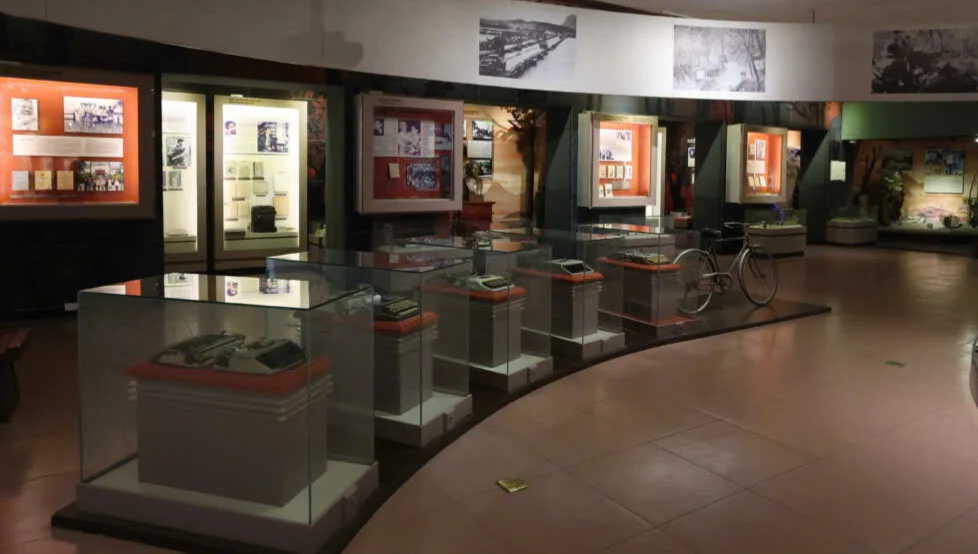
Không gian trưng bày các máy đánh chữ tại tầng 5 của Bảo tàng Văn học Việt Nam
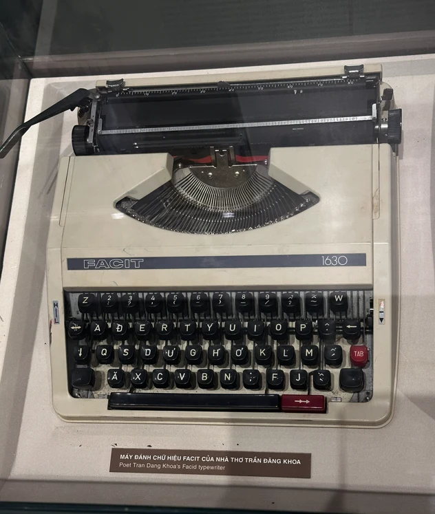
Máy đánh chữ hiệu Facit của nhà thơ Trần Đăng Khoa
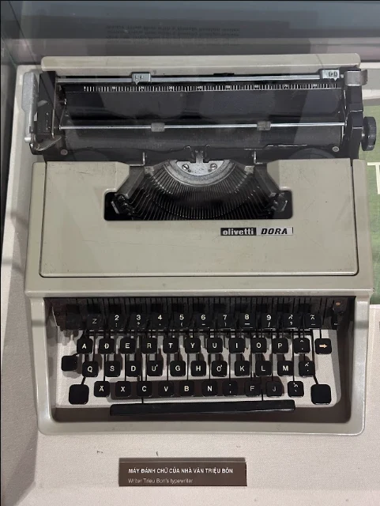
Máy đánh chữ hiệu Olivetti Dora của nhà văn Triệu Bôn
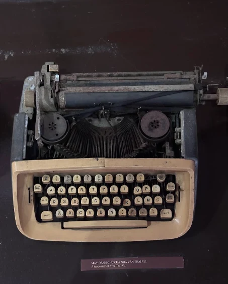
Máy đánh chữ của nhà văn Thái Vũ
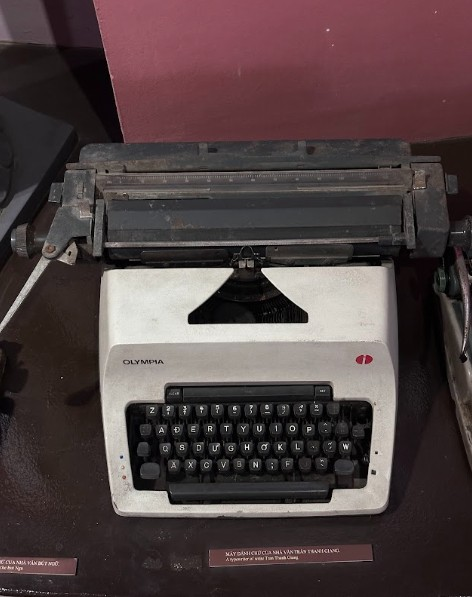
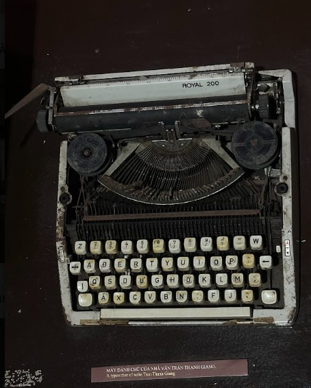
Máy đánh chữ hiệu Olympia và Royal 200 của nhà văn Trần Thanh Giang
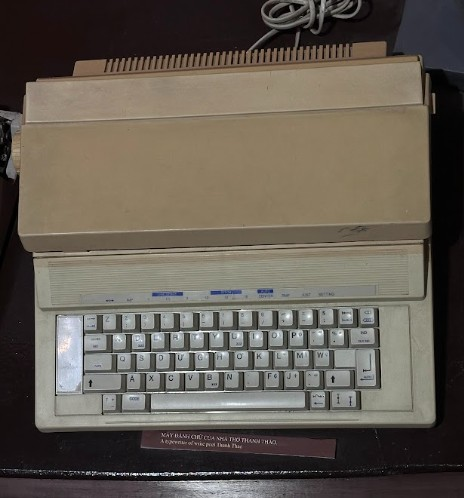
Máy đánh chữ của nhà thơ Thanh Thảo
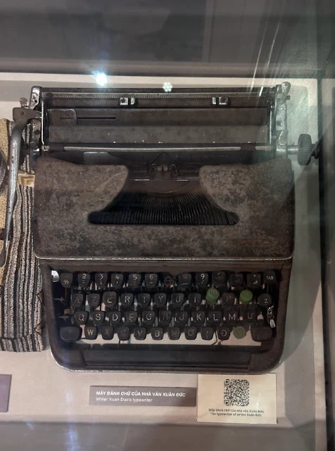
Máy đánh chữ của nhà văn Xuân Đức
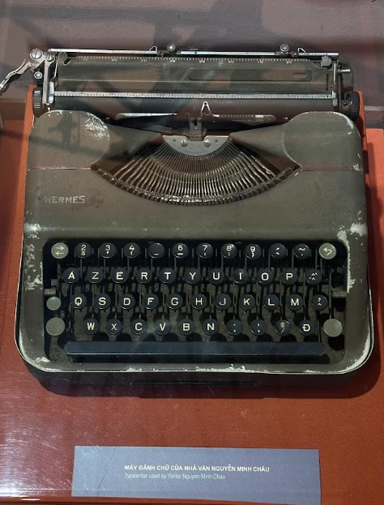
Máy đánh chữ hiệu Hermes của nhà văn Nguyễn Minh Châu
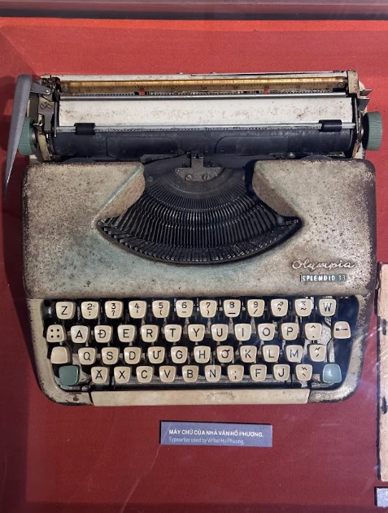
Máy đánh chữ hiệu Olympia Splendid của nhà văn Hồ Phương
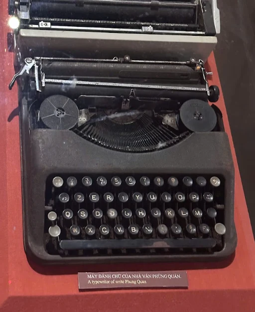
Máy đánh chữ của nhà văn Phùng Quán
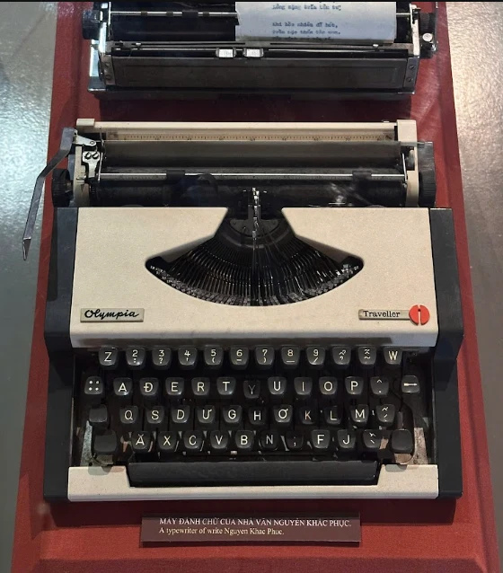
Máy đánh chữ hiệu Olympia Traveller của nhà văn Nguyễn Khắc Phục
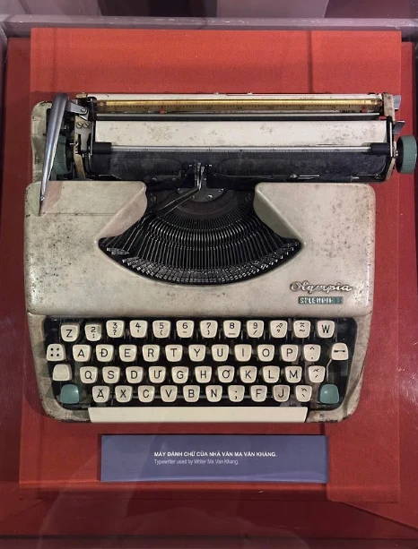
Máy đánh chữ hiệu Olympia Splendid của nhà văn Ma Văn Kháng
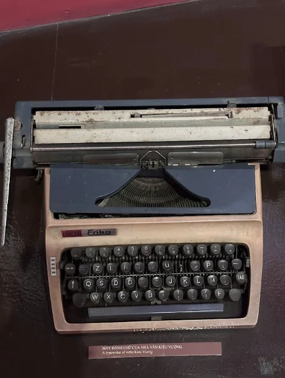
Máy đánh chữ hiệu Daro Erika của nhà văn Kiều Vượng